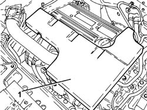
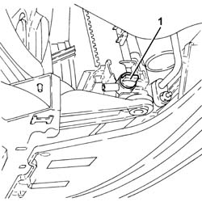
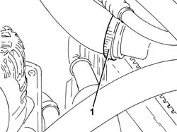
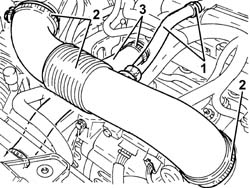
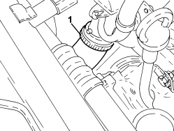
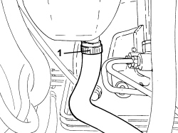
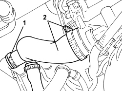

1088D10 LOWER RADIATOR COOLANT OUTLET HOSE - R.R.
- Path
- Procedures > 10 ENGINE > 1088 ENGINE COOLING > 1088D COOLANT PIPES AND HOSES > 1088D10 LOWER RADIATOR COOLANT OUTLET HOSE - R.R.
- Kind
- repair procedure (removal / refitting; the operation number is the code)
- Applies to
- all engines; all production periods
- Interactive page
- https://sloeber94.github.io/elrnDB-fCrm/en/#/194000405
Applies to: engines: 2.2; all production periods
 Removing
Removing
 Refitting
Refitting- Position the vehicle on a lift.
- Make sure that the ignition key is in the OFF position, then disconnect the battery terminal (-).
Description | Connector | |
|---|---|---|
- | Battery |
1. Remove the soundproof cover secured to the engine by three pins.

Applies to: engines: 2.2; all production periods
Op. 7055B54 UNDER ENGINE PROTECTION/GUARD - R.R.
1. Unscrew the coolant drain plug from the radiator.

Applies to: engines: 2.2; all production periods
1. Working from beneath the car, loosen the collar securing the lower coolant outlet sleeve from the radiator, radiator end.

Applies to: engines: 2.2; all production periods
1. Loosen the band and disconnect the engine oil vapour recovery pipe from the cylinder head cover.
2. Loosen the bands and remove the air delivery sleeve from the air flow meter to the throttle body.
3. Loosen the remaining band and disconnect the radiator lower coolant outlet hose.

Applies to: engines: 2.2; all production periods
Refitting
Removing- Refit the lower coolant outlet sleeve from the radiator and secure with the collars.
- Replace the air delivery sleeve from the air flow meter to the throttle valve in its housing, connect it and tighten the bands.
- Connect the engine oil vapour recovery pipe to the cylinder head cover and secure it using the band.
- Tighten the coolant drain plug to the radiator.
Op. 7055B54 UNDER ENGINE PROTECTION/GUARD - R.R.
- Refit the soundproofing cover in its seat and secure to the engine with the three pins.
- Connect the negative battery terminal.
Op. 0010T20 ENGINE COOLANT - CHANGE
- Remove the vehicle from the lift.
Applies to: engines: 1.9 JTD 8v, 1.9 JTD 16v, 2.4 JTD 20v; all production periods
Removing
Refitting- Position the vehicle on a lift.
Op. 7055B54 UNDER ENGINE PROTECTION/GUARD - R.R.
Op. 1048B17 HEAT EXCHANGER AIR INLET HOSE - R.R.
1. Undo the radiator coolant drain plug.
2. Loosen the band and disconnect the lower coolant outlet hose from the radiator, radiator side.

Applies to: engines: 1.9 JTD 8v, 1.9 JTD 16v, 2.4 JTD 20v; all production periods
Op. 1016A10 SOUND-PROOFING COVER - R.R
Op. 1048B19 TURBOCHARGER AIR OUTLET HOSE -R.R.
Op. 1048A42 SLEEVE FROM FLOW METER TO TURBO CHARGER AIR INLET PIPE - R + R
Op. 1048A50 TURBOCHARGER AIR INTAKE PIPE - R.R.
1. Loosen the band and disconnect the lower coolant inlet hose from the radiator, water pump rigid coolant inlet pipe side and remove it.

Applies to: engines: 1.9 JTD 8v, 1.9 JTD 16v, 2.4 JTD 20v; all production periods
Refitting
Removing- Place the lower coolant outlet hose from the radiator back in its housing, connect it to the water pump rigid coolant inlet pipe and tighten the band.
Op. 1048A50 TURBOCHARGER AIR INTAKE PIPE - R.R.
Op. 1048A42 SLEEVE FROM FLOW METER TO TURBO CHARGER AIR INLET PIPE - R + R
Op. 1048B19 TURBOCHARGER AIR OUTLET HOSE -R.R.
Op. 1016A10 SOUND-PROOFING COVER - R.R
- Connect the radiator lower coolant outlet hose, radiator side, and tighten the band.
- Tighten the coolant drain plug to the radiator.
Op. 1048B17 HEAT EXCHANGER AIR INLET HOSE - R.R.
Op. 7055B54 UNDER ENGINE PROTECTION/GUARD - R.R.
Op. 0010T20 ENGINE COOLANT - CHANGE
- Remove the vehicle from the lift.
Applies to: engines: 1.8; all production periods
Removing
RefittingOp. 0010T20 ENGINE COOLANT - CHANGE
1. Loosen the band and disconnect the engine cooling system supply pipe, reservoir side.

Applies to: engines: 1.8; all production periods
1. Loosen the band and disconnect the coolant outlet hose from the lower radiator connector.
2. Loosen the band and disconnect the coolant outlet hose from the radiator, pump side and remove it complete with the system supply pipe.

Applies to: engines: 1.8; all production periods
Refitting
Removing- Place the radiator coolant outlet hose in position, pump side, complete with system supply pipe and connect it using the band.
- Connect the coolant outlet hose to the lower radiator connector and tighten the band.
- Connect the engine cooling system supply pipe, reservoir side and tighten the band.
Topics linked from this page (8)
- 0010T20 ENGINE COOLANT - CHANGE
- 1016A10 SOUND-PROOFING COVER - R.R
- 1048A42 SLEEVE FROM FLOW METER TO TURBO CHARGER AIR INLET PIPE - R + R
- 1048A50 TURBOCHARGER AIR INTAKE PIPE - R.R.
- 1048B17 HEAT EXCHANGER AIR INLET HOSE - R.R.
- 1048B19 TURBOCHARGER AIR OUTLET HOSE -R.R.
- 7055B54 UNDER ENGINE PROTECTION/GUARD - R.R.
- A001 BATTERY